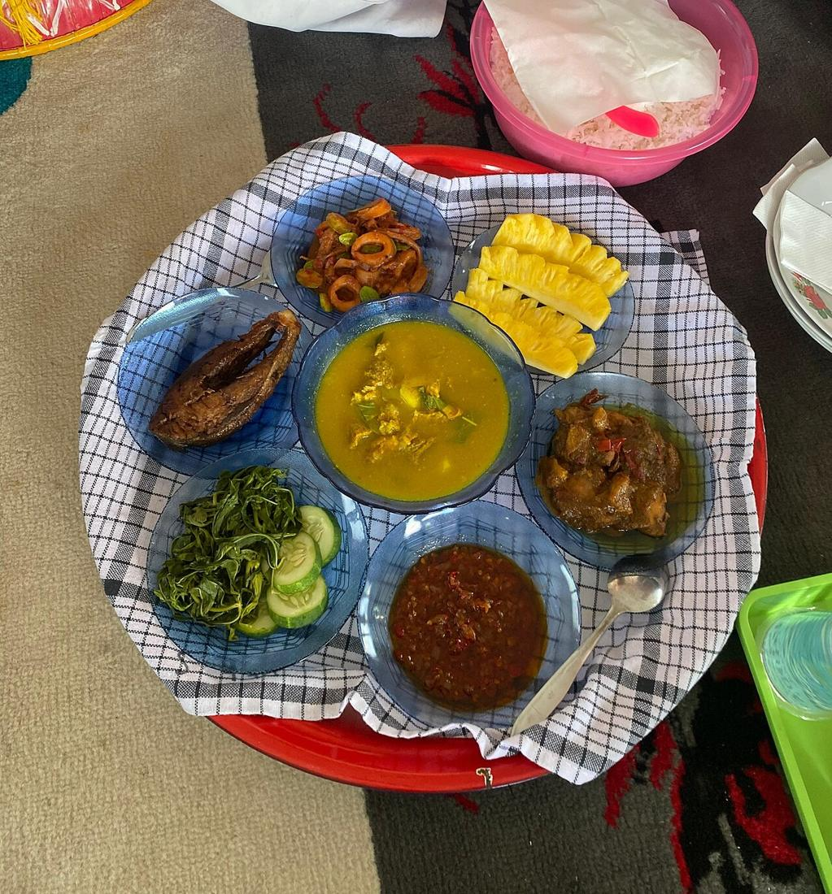

Makan Bedulang: Satu Dulang, Empat Orang, Banyak Pelajaran
Tradisi makan bersama khas Melayu Belitung di sekeliling dulang (nampan besar), dengan tata cara yang mengajarkan hormat kepada yang lebih tua. Ditetapkan sebagai Warisan Budaya Takbenda Indonesia tahun 2023.

Bayangkan empat orang duduk bersila mengelilingi sebuah nampan besar. Di atasnya ada nasi, sayur, ikan, sambal, dan semangkuk gangan di tengah, semuanya tertutup tudung saji. Tidak ada yang langsung mengambil makanan. Semua menunggu satu orang membuka tudung. Itulah makan bedulang.
Apa itu bedulang?
Kata bedulang berasal dari dulang, yaitu nampan bulat besar untuk menyajikan makanan. Menurut Dinas Pariwisata Kabupaten Belitung, satu dulang biasanya untuk empat orang yang duduk melingkar. Isinya nasi, sayuran dari tumbuhan yang ada di Belitung seperti daun singkong, jantung pisang, dan daun kenikir, lauk berkuah seperti gangan di tengah, ikan, dan sambal khas Belitung. Halaman Dispar lainnya menyebut satu dulang bisa berisi 4 sampai 6 piring lauk.
Urutan yang punya makna
Yang membuat tradisi ini istimewa adalah tata caranya:
- Yang tertua membuka tudung saji. Ini bentuk penghormatan kepada orang yang dituakan.
- Yang termuda membagikan piring dan melayani yang lebih tua.
- Lauk diambil bergiliran sesuai usia, secukupnya, dan tidak boleh dikotori supaya bisa dibagi lagi.
Semua duduk sama rendah dan makan dari wadah yang sama. Dispar menyebut makan bedulang sebagai simbol kebersamaan, persaudaraan, dan kesetaraan, sekaligus cara mengajarkan sopan santun, berbagi, dan saling menghargai.
Dari rumah pesisir ke acara resmi
Dinas Pariwisata memperkirakan tradisi ini lahir dari perpaduan budaya Melayu dan ajaran Islam. Hal itu terlihat dari kebiasaan duduk bersila dan makan dengan tangan. Dulu, makan bedulang dipakai warga pesisir sebagai sarana berkomunikasi dan mengajarkan sopan santun dalam keluarga. Lama-kelamaan tradisi ini menjadi bagian dari acara resmi seperti pesta pernikahan, khitanan, dan hari besar agama.
Kini makan bedulang juga hadir di festival budaya, penyambutan tamu, dan kegiatan pariwisata.
Diakui sebagai warisan budaya
Pada sidang penetapan tanggal 31 Agustus 2023, makan bedulang ditetapkan sebagai Warisan Budaya Takbenda (WBTb) Indonesia, bersama kesenian Lesong Panjang dari Kabupaten Belitung. Hal ini dibenarkan pihak Dinas Pendidikan dan Kebudayaan Kabupaten Belitung kepada Trawangnews.
Kalau kamu diajak makan bedulang
- Tunggu yang tertua membuka tudung saji.
- Kalau kamu yang paling muda di lingkaran, bersiaplah membagikan piring.
- Ambil secukupnya. Makanan di dulang adalah milik bersama.
- Cuci tangan sebelum mulai, karena biasanya makan dengan tangan.
Makan bedulang mengingatkan kita bahwa makan bersama juga bisa jadi cara belajar menghormati orang lain.
Sumber: lihat daftar sumber di bawah. Tulisan ini disusun ulang oleh tim iTAP Belitung.
Sumber
- dispar.belitung.go.id/makan-bedulang/
- dispar.belitung.go.id/makan-bedulang-tradisi-kebersamaan-khas-belitung/
- www.trawangnews.com/selamat-lesong-panjang-dan-makan-bedulang-ditetapkan-sebagai-warisan-b
Ditulis ulang oleh tim iTAP Belitung dari sumber di atas. Ada yang keliru? Kabari kami lewat Kirim kabar atau email putraanandateguh@gmail.com.